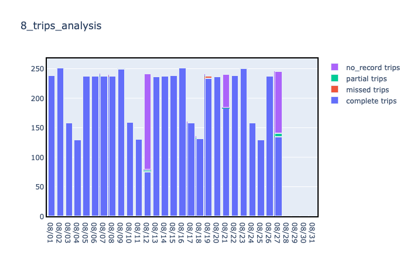
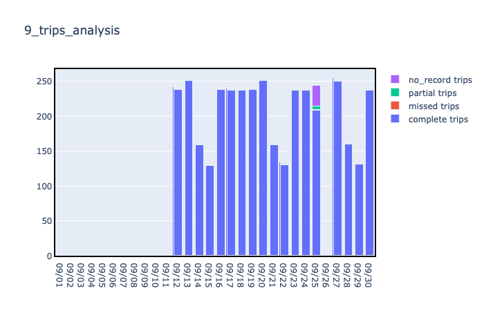
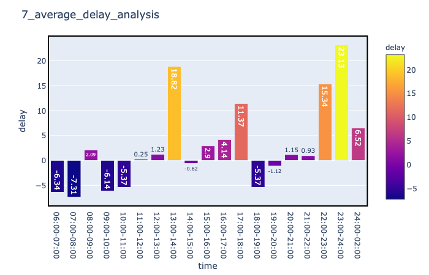
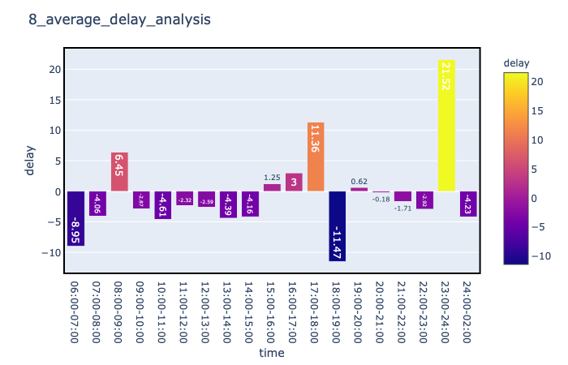
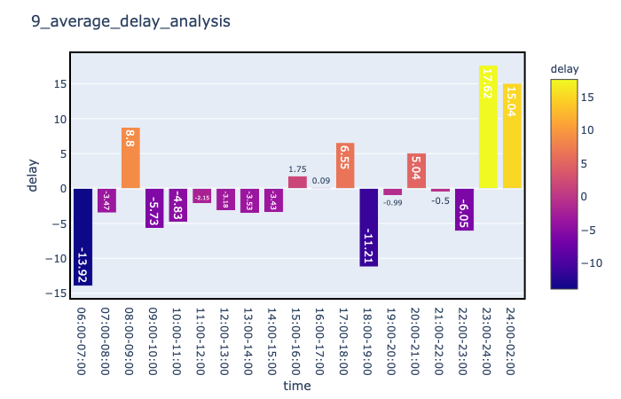
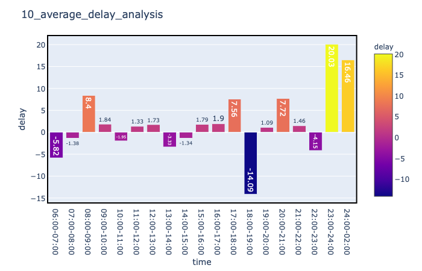
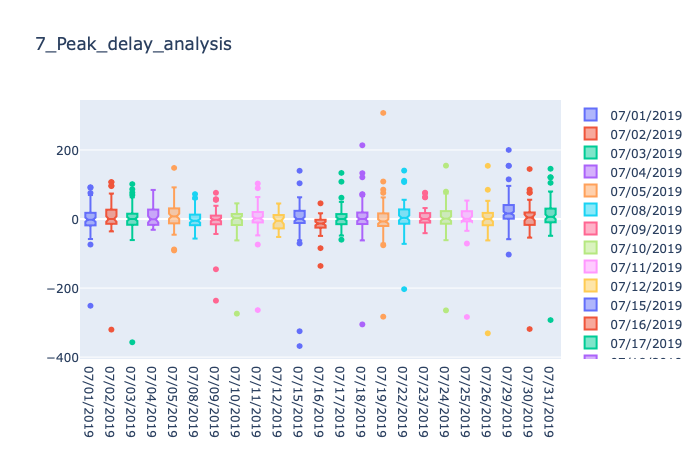
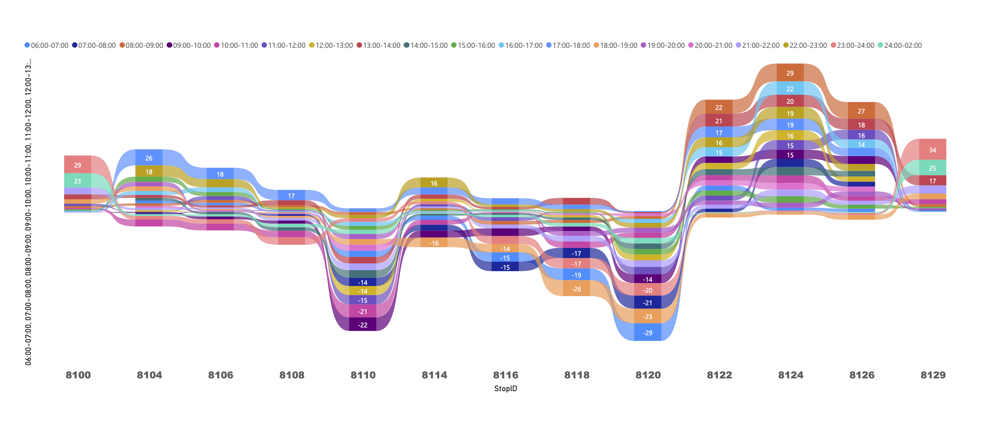

In order to deliver a convenient and reliable transport system for Canberra, Transport Canberra designed an integrated platform to provide real-time operation data of light rail on open data platform. This kind of data is called GTFSR, which is automatically generated by the sensor on the tram vehicle, including location, time, stop ID, date, trip ID, late or early seconds compared with the timetable. And all the data would be pushed to Open Data platform.
Data Team of Transport Canberra wants to precisely track and analysis the light rail performance. So Data Team commenced an individual project to build an automatic data analysis dashboard. And this is my internship project!
The Light Rail performance measurements has been decided in the contract with light rail operation company. These rules are very complicated, most measurement is impossible for humans to work on. Before my project, Data Team could only roughly check the results calculated by operation company. So they really wanted to have automatic python scripts to do the data analysis and computation. My job included the following tasks:
the dashboard needs to automatically retrieve GTFSR(light rail data) data from open data platform and also clean the data ready for analytics
translate these complex contract rules into python scripts according to the measurement definitions
automatically run the scripts to analyze and compute performance measurement with the real time GTFSR data
generate analysis results and visualize the monthly results on the dashboard so that Data Team can use it to check the measurements
Photographer: Transport Canberra
Finally, I completed the dashboard very well and presented the showcase to the Department of Transport. My dashboard greatly facilitated the verification job so that they can identify the mis-computation in operation company’s report. Besides, according to the analysis results, they identified some necessary adjustment of light rail timetable.
This website is a good way for me to integrated the whole project and make it in a more interesting way. At this stage, I want to display what I have done. In the long term, I will put the dashboard on a server so that the lively transport data analysis will be shown on this website.
Feel free to send your feedback. I’m happy to hear your suggestions and let's make a better website ^_^
Photographer: Transport Canberra
Light rail image slideshow gallery
This is the gallery showing all the pictures I took of Canberra Light Rail. ^-^
This is analysis for the number of 4 kinds of trips on each day whthin a month: completed trips, partial trips, missed trips, no-data-record-trips. Noting the number of schedules trips varies according different weekdays.
July trips analysis

August trips analysis

September trips analysis
October trips analysis
This is analysis for average delay seconds of trips on each day whthin a month:

July average delay analysis

August average delay analysis

September average delay analysis

October average delay analysis
This is analysis for distribution delay seconds of trips for peak time on each day whthin a month:

July peak-time delay analysis
August peak-time delay analysis
September peak-time delay analysis
October peak-time delay analysis
This is analysis for delay seconds of each stop whthin a month:

Accoring to this analysis, we can identify the delay pattern at Stop 8110(Well station), Stop 8120(Dickson). Since these two stops are measuring stops, the operation company tends to catch time to make it up to the already delay time. This suggest the necessary adjustment of timetable.
Epub is the commonly used open standard to create-books, which is published by International Digital Publishing Forum (IDPF). I used Calibre and Sigil to convert my website into epub, which gave me the hint of why the epub creation is a lengthy and error prone process. Specially, all the links on my index page will be converted in one multiple XHTML files, one per chapter. The images and videos would be also linked from external. Actually the epub file is just zipped version of directory structure. Mimetype only application/epub+zip and container.xml refers to the root file “minimal.opf”.
First of all, most industry applications are still using Epub 2.0, thus I choose to use 2.0 as well. As important features of 2.0, the script files cannot be included in my conversion, which requires me to modify my website html to change script-associating elements. At the same time, I specified the format of the and paragraphs. Since e-book could not display the CSS functions like hover, I made the changes accordingly. Since epub does not specify the media type and devices, we need to consider different screen and media. The simple way to respond to this issue is to use relative percentage layout.
Next, in order to make my web pages into an attractive EPUB, I need to use Sigil to control my formatting. Calibre doesn’t specify the font style of the e-book, and this will depend on the individual device or program to pick the style. Some devices like Kindle can choose the font size while some cannot. In this way, Sigil can help get better layout appearance. In caliber, the HTML is automatically converted into epub by algorithms within the Calibre program. I saw the named styles like calibre4 or s2. The styles appear in CSS-style class statements such as "div class=s2" or "p class=calibre4" or "span class=none2". The HTML div and span tags are container tags simply used to apply class styles to whatever is inside them. Paragraph is friendly for epub, if the p is inside a div, the class assigned to the p takes precedence over any class properties assigned to the div. Since I want to tweak the text appearance, I changed the CSS into "h1 class=calibre2".
After converting the suitable CSS for my website epub, I found Sigil is very responsive because the changes immediately applied to associated parts.
💡 I created lively rating for my website and it's higly original
Come rate my website, you can choose on the scale of 1 to 5 star. Below is the average rating and total number of ratings. You are very welcome to give me more feedback in detail in the form.
Average User Rating : 4.18
so far, there are 100 user ratings
5 star
50
4 star
25
3 star
20
2 star
3
1 star
2
Vote here
Tell me what you think of my project and website! I will be really happy to hear from you. If you would like a response, please include your email address.
💡 Reflection about my website 💡
Overall, this website design assignment greatly illustrate how to develop or construct a basic website, which I really enjoy doing and learned a lot from. The course outline gradually helps me achieve the learning outcomes from the simple paragraphs and photo gallery, then all the way to the front and back end. This is a great process for a new beginner to learn from scratch and get the sense of accomplishment. In general, this website has been developed into a basic static one with texts, picture and some JavaScript functions to facilitates the photo gallery and functionalities. However, as a “design” work, I think it requires more creational aspects. Especially after browsing some fantastic examples of good designed websites, there are many features I want to learn how to implement and integrated into my website.
For example, for the photo gallery, it would be better to use all the analysis images integrated into photo gallery. However, when I constructed the analysis part, I did not know the gallery could be the great way to illustrate a collection of pictures. Instead, I used a big division to display analysis results. After implementing photo gallery, I have learnt lots of different gallery styles, which will be very useful to me if I need to choose which style is better for some specific situations.
The other reflection is about rating part. When I tried to implement a lively recorded rating for my website, which seems to be simple and straightforward, but I found it is still quite challenging. Ideally, I want to build a back-end server for my website, so that I can store every user’s rating in the database. However such techniques are still strange to me. I need learn more to implement this functionality.
Future implementation: my initial prototype for this website was a live dashboard to visualize real-time Canberra light rail performance, which would involve more lively interaction with users and open source database. In other words, this initial idea would be very challenging for a beginner like me. Importantly such live dashboard did not satisfy the assignment requirements, as a result, I did not choose to implement a live dashboard. As a result, I still want to finish my initial plan, which can be my resume project.


Here are the social buttons to Transport Canberra, you can get more information there
Below is the Twitter feeds from Transport Canberra
Tweets by Transport_CBR